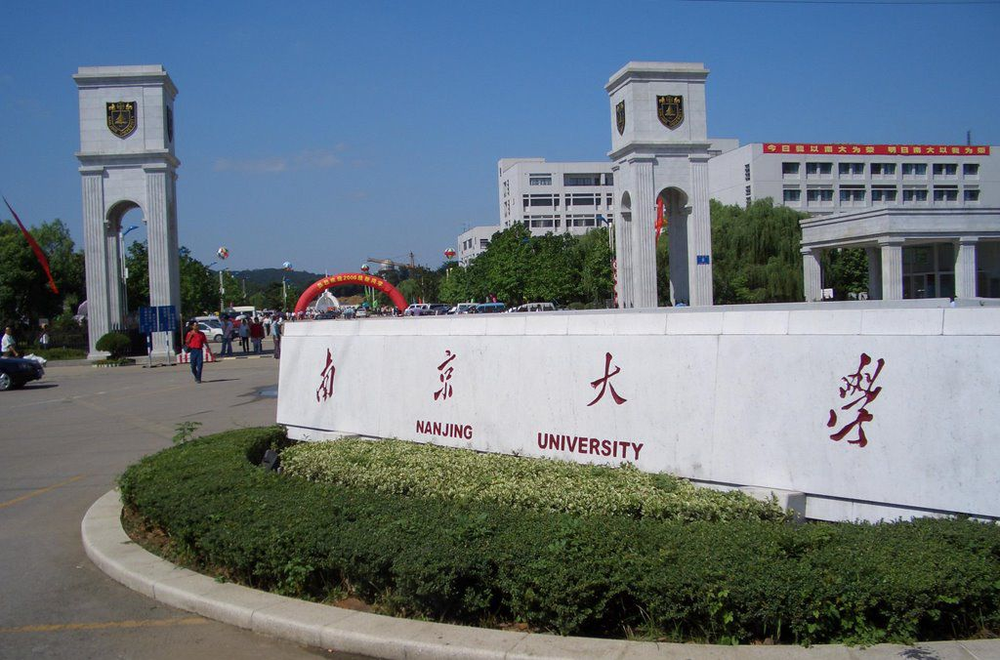
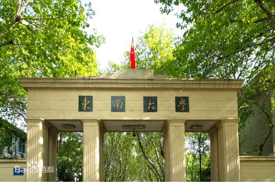
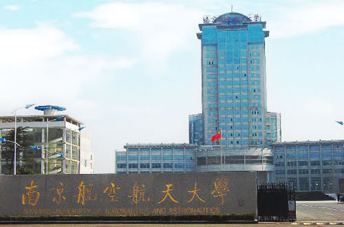

| 校名 | 校训 | 创办时间 | 著名校友 |
|---|---|---|---|
| 南京大学 | 诚朴雄伟，励学敦行 | 1902年 | 杨洁篪 吴健雄 厉麟似 郭金龙 闵乃本 |
| 东南大学 | 止于至善 | 1902年 | 吴健雄 王澍 张永和 张桂平 林鸣 陆勇 周源 |
| 南京航空航天大学 | 智周万物 道济天下 | 1952年10月 | 吕祖善 林左鸣 李中华 陈都灵 |
| 河海大学 | 艰苦朴素，实事求是，严格要求，勇于探索 | 1915年 | 茅以升 张闻天 沈泽民 严恺 钱正英 |
-

南京大学（Nanjing University），简称“南大”，是中华人民共和国教育部直属、中央直管副部级建制的全国重点大学，国家首批“双一流”、“211工程”、“985工程”重点建设高校，入选首批“珠峰计划”、“111计划”、“2011计划”、“卓越工程师教育培养计划”、“卓越医生教育培养计划”、“卓越法律人才教育培养计划”，九校联盟、中国大学校长联谊会、环太平洋大学联盟、21世纪学术联盟和东亚研究型大学协会成员。
-

东南大学（Southeast University），简称“东大”，位于江苏省会南京，国家首批“211工程”、“985工程”、“双一流”A类世界一流大学建设高校， [1] 并入选“卓越工程师教育培养计划”、“卓越医生教育培养计划”、“国家大学生创新性实验计划”、“国家建设高水平大学公派研究生项目”、“2011计划”、“111计划”、“教育部来华留学示范基地”，是“卓越大学联盟”、“中俄工科大学联盟”、“中欧工程教育平台”、“长三角高校合作联盟”主要成员。
-

南京航空航天大学（Nanjing University of Aeronautics and Astronautics），简称南航（NUAA），是中华人民共和国工业和信息化部直属的一所具有航空航天民航特色、以理工类为主的综合性全国重点大学，是国家“211工程”、“985工程优势学科创新平台”重点建设高校，是国家“双一流”世界一流学科建设高校，是“卓越工程师教育培养计划”、“111计划”入选高校，“中俄交通大学联盟”成员，设有研究生院。